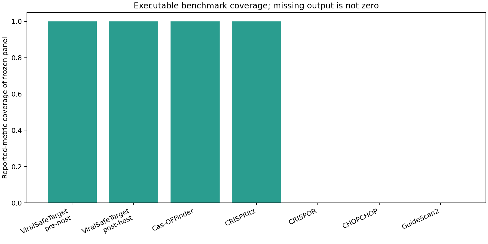
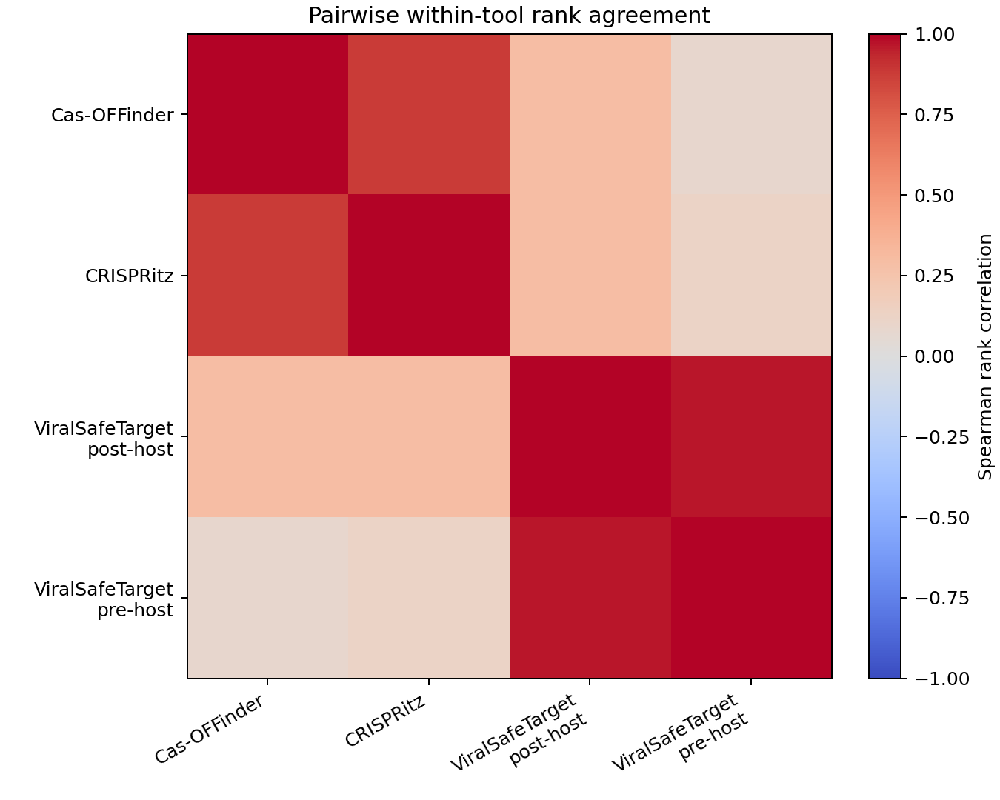
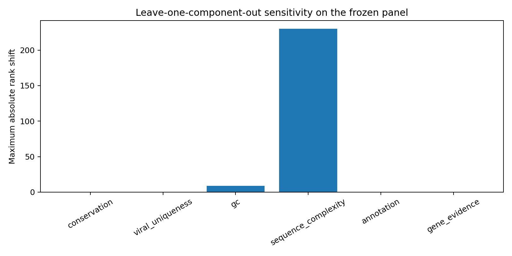

Completed: viral_safe_target_pre_human, viral_safe_target_post_human, cas-offinder, crispritz. Pending/export-required: crispor, chopchop, guidescan2.
| tool_name | tool_version | execution_mode | status | candidate_count | reported_candidates | missing_candidates | coverage_fraction | runtime_seconds | runtime_scope | reason | official_source |
|---|---|---|---|---|---|---|---|---|---|---|---|
| viral_safe_target_pre_human | 0.9.0 | internal ranking | completed | 257 | 257 | 0 | 1.0 | <NA> | not isolated from the source workflow | https://github.com/ronnuriel/ViralSafeTarget | |
| viral_safe_target_post_human | 0.9.0 | internal ranking after configured host-risk layer | completed | 257 | 257 | 0 | 1.0 | <NA> | not isolated from the source workflow | https://github.com/ronnuriel/ViralSafeTarget | |
| cas-offinder | 2.4.1 | GRCh38.p14 reference search through three mismatches | completed | 257 | 257 | 0 | 1.0 | 18821.560434 | exhaustive 23,108-candidate source run; not a same-panel runtime comparison | https://github.com/snugel/cas-offinder | |
| crispritz | 2.6.6 Docker image digest sha256:8a6c8212621ee6cc467e7a5bc7ff4405cbb83bfa7c0487c232977f4a09ff0273 | GRCh38.p14 reference search through three mismatches; no bulges or variants | completed | 257 | 257 | 0 | 1.0 | 709.78 | frozen 257-guide panel | official Docker raw profile and runtime record are committed | https://github.com/pinellolab/CRISPRitz |
| crispor | web/CLI capability assessed 2026-07-15 | documented researcher export | export_required | 257 | 0 | 257 | 0.0 | <NA> | not assessed | no raw export is committed; public web interfaces are not scraped | https://github.com/maximilianh/crisporWebsite |
| chopchop | v3 web/CLI capability assessed 2026-07-15 | documented researcher export | export_required | 257 | 0 | 257 | 0.0 | <NA> | not assessed | no raw export is committed; public web interfaces are not scraped | https://chopchop.cbu.uib.no/about |
| guidescan2 | GuideScan2 capability assessed 2026-07-15 | documented researcher export | export_required | 257 | 0 | 257 | 0.0 | <NA> | not assessed | no raw export is committed; public web interfaces are not scraped | https://guidescan.com/ |

| tool_a | tool_b | shared_candidates | spearman_rank_correlation | status |
|---|---|---|---|---|
| cas-offinder | crispritz | 257 | 0.880413 | completed |
| cas-offinder | viral_safe_target_post_human | 257 | 0.289675 | completed |
| cas-offinder | viral_safe_target_pre_human | 257 | 0.085008 | completed |
| crispritz | viral_safe_target_post_human | 257 | 0.296323 | completed |
| crispritz | viral_safe_target_pre_human | 257 | 0.117298 | completed |
| viral_safe_target_post_human | viral_safe_target_pre_human | 257 | 0.961975 | completed |

| tool_a | tool_b | top_k | overlap_count | jaccard_overlap |
|---|---|---|---|---|
| cas-offinder | crispritz | 10 | 9 | 0.818182 |
| cas-offinder | crispritz | 25 | 24 | 0.923077 |
| cas-offinder | crispritz | 50 | 49 | 0.960784 |
| cas-offinder | viral_safe_target_post_human | 10 | 0 | 0.000000 |
| cas-offinder | viral_safe_target_post_human | 25 | 4 | 0.086957 |
| cas-offinder | viral_safe_target_post_human | 50 | 10 | 0.111111 |
| cas-offinder | viral_safe_target_pre_human | 10 | 0 | 0.000000 |
| cas-offinder | viral_safe_target_pre_human | 25 | 4 | 0.086957 |
| cas-offinder | viral_safe_target_pre_human | 50 | 10 | 0.111111 |
| crispritz | viral_safe_target_post_human | 10 | 0 | 0.000000 |
| crispritz | viral_safe_target_post_human | 25 | 4 | 0.086957 |
| crispritz | viral_safe_target_post_human | 50 | 10 | 0.111111 |
| crispritz | viral_safe_target_pre_human | 10 | 0 | 0.000000 |
| crispritz | viral_safe_target_pre_human | 25 | 4 | 0.086957 |
| crispritz | viral_safe_target_pre_human | 50 | 10 | 0.111111 |
| viral_safe_target_post_human | viral_safe_target_pre_human | 10 | 10 | 1.000000 |
| viral_safe_target_post_human | viral_safe_target_pre_human | 25 | 25 | 1.000000 |
| viral_safe_target_post_human | viral_safe_target_pre_human | 50 | 50 | 1.000000 |
This is sensitivity analysis, not model retraining or biological validation.
| variant | spearman_vs_all_components | median_absolute_rank_shift | maximum_absolute_rank_shift | top_10_overlap | top_25_overlap | top_50_overlap |
|---|---|---|---|---|---|---|
| all_components | 1.000000 | 0.0 | 0.0 | 10 | 25 | 50 |
| without_conservation | 1.000000 | 0.0 | 0.0 | 10 | 25 | 50 |
| without_viral_uniqueness | 1.000000 | 0.0 | 0.0 | 10 | 25 | 50 |
| without_gc | 0.999937 | 0.0 | 9.0 | 10 | 25 | 50 |
| without_sequence_complexity | 0.179123 | 75.0 | 230.0 | 0 | 4 | 10 |
| without_annotation | 1.000000 | 0.0 | 0.0 | 10 | 25 | 50 |
| without_gene_evidence | 1.000000 | 0.0 | 0.0 | 10 | 25 | 50 |

Documented scope is separate from executable performance.
| tool_name | capability | status | note | official_source | accessed_date |
|---|---|---|---|---|---|
| ViralSafeTarget | guide_design | yes | Enumerates configured nuclease targets across supplied viral sequences. | https://github.com/ronnuriel/ViralSafeTarget | 2026-07-15 |
| ViralSafeTarget | user_supplied_genome | yes | Project profiles accept virus FASTA/GFF and host references. | https://github.com/ronnuriel/ViralSafeTarget | 2026-07-15 |
| ViralSafeTarget | multi_strain_viral_conservation | yes | Exact target/PAM support is measured across discovery and held-out viral populations. | https://github.com/ronnuriel/ViralSafeTarget | 2026-07-15 |
| ViralSafeTarget | host_offtarget_search | yes | Orchestrates Cas-OFFinder and preserves model-bounded hit counts. | https://github.com/ronnuriel/ViralSafeTarget | 2026-07-15 |
| ViralSafeTarget | mismatch_search | yes | Configured Cas-OFFinder mismatch searches are supported. | https://github.com/ronnuriel/ViralSafeTarget | 2026-07-15 |
| ViralSafeTarget | bulge_search | partial | CRISPRitz adapter/import support exists; no bulge result is claimed in the HSV-2 snapshot. | https://github.com/ronnuriel/ViralSafeTarget | 2026-07-15 |
| ViralSafeTarget | population_variant_host_risk | partial | CRISPRitz variant-aware inputs/imports are supported but not completed in this benchmark. | https://github.com/ronnuriel/ViralSafeTarget | 2026-07-15 |
| ViralSafeTarget | on_target_scoring | partial | Transparent sequence heuristics are reported; they are not presented as experimentally calibrated efficiency. | https://github.com/ronnuriel/ViralSafeTarget | 2026-07-15 |
| ViralSafeTarget | gene_annotation | yes | One-to-many GFF gene/CDS mappings are preserved. | https://github.com/ronnuriel/ViralSafeTarget | 2026-07-15 |
| ViralSafeTarget | protein_disruption | yes | Reports bounded sequence hypotheses, frameshift class, premature-stop potential, and region overlap. | https://github.com/ronnuriel/ViralSafeTarget | 2026-07-15 |
| ViralSafeTarget | biological_evidence_provenance | yes | Evidence species, directness, source, confidence, and human review state remain explicit. | https://github.com/ronnuriel/ViralSafeTarget | 2026-07-15 |
| ViralSafeTarget | escape_robustness | yes | Reports observed population support and exact-target sequence counterfactuals. | https://github.com/ronnuriel/ViralSafeTarget | 2026-07-15 |
| ViralSafeTarget | mechanism_aware_multiplex | yes | Config-driven panels keep mechanism categories and sequence escape barriers separate. | https://github.com/ronnuriel/ViralSafeTarget | 2026-07-15 |
| ViralSafeTarget | cli | yes | Installable vst CLI with project and analysis workflows. | https://github.com/ronnuriel/ViralSafeTarget | 2026-07-15 |
| CRISPOR | guide_design | yes | Finds and ranks guides in an input sequence. | https://pmc.ncbi.nlm.nih.gov/articles/PMC6030908/ | 2026-07-15 |
| CRISPOR | user_supplied_genome | partial | Standalone use is documented but local genome/index preparation is required for full off-target analysis. | https://github.com/maximilianh/crisporWebsite | 2026-07-15 |
| CRISPOR | multi_strain_viral_conservation | not_assessed | No integrated multi-strain viral population workflow was identified in the cited scope; this is not proof of absence. | https://pmc.ncbi.nlm.nih.gov/articles/PMC6030908/ | 2026-07-15 |
| CRISPOR | host_offtarget_search | yes | Reports predicted off-target sites and specificity scores in a selected genome. | https://pmc.ncbi.nlm.nih.gov/articles/PMC6030908/ | 2026-07-15 |
| CRISPOR | mismatch_search | yes | The paper documents potential off-targets through four mismatches. | https://pmc.ncbi.nlm.nih.gov/articles/PMC6030908/ | 2026-07-15 |
| CRISPOR | bulge_search | not_assessed | Not established from the cited official paper/repository review. | https://pmc.ncbi.nlm.nih.gov/articles/PMC6030908/ | 2026-07-15 |
| CRISPOR | population_variant_host_risk | not_assessed | Not established from the cited official paper/repository review. | https://pmc.ncbi.nlm.nih.gov/articles/PMC6030908/ | 2026-07-15 |
| CRISPOR | on_target_scoring | yes | Multiple activity scores are presented and assay-dependent limitations are documented. | https://pmc.ncbi.nlm.nih.gov/articles/PMC6030908/ | 2026-07-15 |
| CRISPOR | gene_annotation | yes | Off-target locations and genomic annotations are reported. | https://pmc.ncbi.nlm.nih.gov/articles/PMC6030908/ | 2026-07-15 |
| CRISPOR | protein_disruption | partial | An out-of-frame score is available; it is not the same as the bounded CDS/domain analysis benchmarked here. | https://pmc.ncbi.nlm.nih.gov/articles/PMC6030908/ | 2026-07-15 |
| CRISPOR | biological_evidence_provenance | not_assessed | No virus-gene literature evidence curation layer was identified in the cited scope. | https://pmc.ncbi.nlm.nih.gov/articles/PMC6030908/ | 2026-07-15 |
| CRISPOR | escape_robustness | not_assessed | No discovery/held-out viral target escape workflow was identified in the cited scope. | https://pmc.ncbi.nlm.nih.gov/articles/PMC6030908/ | 2026-07-15 |
| CRISPOR | mechanism_aware_multiplex | not_assessed | No mechanism-aware viral panel selection was identified in the cited scope. | https://pmc.ncbi.nlm.nih.gov/articles/PMC6030908/ | 2026-07-15 |
| CRISPOR | cli | yes | A standalone command-line version is documented. | https://github.com/maximilianh/crisporWebsite | 2026-07-15 |
| CHOPCHOP | guide_design | yes | Supports Cas9, Cpf1/Cas12a, Cas13, nickase, and TALEN design modes. | https://chopchop.cbu.uib.no/about | 2026-07-15 |
| CHOPCHOP | user_supplied_genome | partial | New FASTA/GFF assemblies can be submitted and a local command-line version is documented. | https://chopchop.cbu.uib.no/submissions | 2026-07-15 |
| CHOPCHOP | multi_strain_viral_conservation | not_assessed | No integrated multi-strain viral population workflow was identified in the cited scope. | https://chopchop.cbu.uib.no/instructions | 2026-07-15 |
| CHOPCHOP | host_offtarget_search | yes | Guide ranking includes predicted off-target considerations for configured genomes. | https://chopchop.cbu.uib.no/instructions | 2026-07-15 |
| CHOPCHOP | mismatch_search | yes | Mismatch parameters are part of the documented CRISPR options. | https://chopchop.cbu.uib.no/instructions | 2026-07-15 |
| CHOPCHOP | bulge_search | not_assessed | Not established from the cited official documentation. | https://chopchop.cbu.uib.no/instructions | 2026-07-15 |
| CHOPCHOP | population_variant_host_risk | not_assessed | Not established from the cited official documentation. | https://chopchop.cbu.uib.no/instructions | 2026-07-15 |
| CHOPCHOP | on_target_scoring | yes | Multiple guide-efficiency scoring methods are documented. | https://chopchop.cbu.uib.no/instructions | 2026-07-15 |
| CHOPCHOP | gene_annotation | yes | Gene, transcript, and isoform-aware targeting is documented. | https://chopchop.cbu.uib.no/instructions | 2026-07-15 |
| CHOPCHOP | protein_disruption | partial | Knockout modes and target placement are supported, but equivalence to the current CDS/domain hypothesis model is not claimed. | https://chopchop.cbu.uib.no/instructions | 2026-07-15 |
| CHOPCHOP | biological_evidence_provenance | not_assessed | No virus-gene literature evidence curation layer was identified in the cited scope. | https://chopchop.cbu.uib.no/about | 2026-07-15 |
| CHOPCHOP | escape_robustness | not_assessed | No discovery/held-out viral target escape workflow was identified in the cited scope. | https://chopchop.cbu.uib.no/about | 2026-07-15 |
| CHOPCHOP | mechanism_aware_multiplex | not_assessed | No mechanism-aware viral panel selection was identified in the cited scope. | https://chopchop.cbu.uib.no/about | 2026-07-15 |
| CHOPCHOP | cli | yes | A local command-line implementation is linked by the official site. | https://chopchop.cbu.uib.no/about | 2026-07-15 |
| CRISPRitz | guide_design | no | The documented scope is off-target search and assessment, not de novo guide design. | https://pmc.ncbi.nlm.nih.gov/articles/PMC7141852/ | 2026-07-15 |
| CRISPRitz | user_supplied_genome | yes | Search accepts a supplied reference genome or pre-built index. | https://github.com/pinellolab/CRISPRitz | 2026-07-15 |
| CRISPRitz | multi_strain_viral_conservation | not_assessed | No integrated viral multi-strain target prioritization was identified in the cited scope. | https://pmc.ncbi.nlm.nih.gov/articles/PMC7141852/ | 2026-07-15 |
| CRISPRitz | host_offtarget_search | yes | High-throughput off-target identification is the primary documented function. | https://pmc.ncbi.nlm.nih.gov/articles/PMC7141852/ | 2026-07-15 |
| CRISPRitz | mismatch_search | yes | Arbitrary mismatch thresholds are supported. | https://pmc.ncbi.nlm.nih.gov/articles/PMC7141852/ | 2026-07-15 |
| CRISPRitz | bulge_search | yes | RNA/DNA bulges are explicitly supported through an indexed-genome workflow. | https://pmc.ncbi.nlm.nih.gov/articles/PMC7141852/ | 2026-07-15 |
| CRISPRitz | population_variant_host_risk | yes | Genetic variants can be encoded and analyzed at population/sample levels. | https://pmc.ncbi.nlm.nih.gov/articles/PMC7141852/ | 2026-07-15 |
| CRISPRitz | on_target_scoring | partial | The search/report workflow can calculate Doench/CFD scores under supported settings; it is not a de novo design layer. | https://github.com/pinellolab/CRISPRitz | 2026-07-15 |
| CRISPRitz | gene_annotation | partial | Annotate-results adds functional annotations to nominated sites. | https://github.com/pinellolab/CRISPRitz | 2026-07-15 |
| CRISPRitz | protein_disruption | no | The cited scope does not model viral CDS/protein consequences after the on-target cut. | https://pmc.ncbi.nlm.nih.gov/articles/PMC7141852/ | 2026-07-15 |
| CRISPRitz | biological_evidence_provenance | no | The cited scope does not curate virus-gene literature evidence. | https://pmc.ncbi.nlm.nih.gov/articles/PMC7141852/ | 2026-07-15 |
| CRISPRitz | escape_robustness | no | The cited scope does not report held-out viral target coverage or multiplex escape barriers. | https://pmc.ncbi.nlm.nih.gov/articles/PMC7141852/ | 2026-07-15 |
| CRISPRitz | mechanism_aware_multiplex | no | The cited scope does not select viral panels by biological mechanism. | https://pmc.ncbi.nlm.nih.gov/articles/PMC7141852/ | 2026-07-15 |
| CRISPRitz | cli | yes | Conda and Docker command-line workflows are documented. | https://github.com/pinellolab/CRISPRitz | 2026-07-15 |
| GuideScan2 | guide_design | yes | Builds genome-wide guide databases and supports guide design/search. | https://link.springer.com/article/10.1186/s13059-025-03488-8 | 2026-07-15 |
| GuideScan2 | user_supplied_genome | yes | The software constructs specificity databases from genome assemblies. | https://link.springer.com/article/10.1186/s13059-025-03488-8 | 2026-07-15 |
| GuideScan2 | multi_strain_viral_conservation | not_assessed | No integrated multi-strain viral population prioritization was identified in the cited scope. | https://link.springer.com/article/10.1186/s13059-025-03488-8 | 2026-07-15 |
| GuideScan2 | host_offtarget_search | yes | Genome-wide specificity analysis is a primary documented function. | https://link.springer.com/article/10.1186/s13059-025-03488-8 | 2026-07-15 |
| GuideScan2 | mismatch_search | yes | Specificity depends on the configured maximum off-target search threshold. | https://guidescan.com/py/grna_sequence_search | 2026-07-15 |
| GuideScan2 | bulge_search | not_assessed | Not established from the cited official paper/site review. | https://link.springer.com/article/10.1186/s13059-025-03488-8 | 2026-07-15 |
| GuideScan2 | population_variant_host_risk | not_assessed | Not established from the cited official paper/site review. | https://link.springer.com/article/10.1186/s13059-025-03488-8 | 2026-07-15 |
| GuideScan2 | on_target_scoring | partial | Guide design and specificity are supported; a common experimentally calibrated activity metric was not assumed here. | https://link.springer.com/article/10.1186/s13059-025-03488-8 | 2026-07-15 |
| GuideScan2 | gene_annotation | partial | Genome-wide guide databases can be used with genomic context; equivalence to one-to-many viral GFF mapping is not claimed. | https://link.springer.com/article/10.1186/s13059-025-03488-8 | 2026-07-15 |
| GuideScan2 | protein_disruption | no | The cited scope does not model bounded viral CDS/protein outcomes after cutting. | https://link.springer.com/article/10.1186/s13059-025-03488-8 | 2026-07-15 |
| GuideScan2 | biological_evidence_provenance | no | The cited scope does not curate virus-gene experimental evidence. | https://link.springer.com/article/10.1186/s13059-025-03488-8 | 2026-07-15 |
| GuideScan2 | escape_robustness | no | The cited scope does not report discovery/held-out viral target escape robustness. | https://link.springer.com/article/10.1186/s13059-025-03488-8 | 2026-07-15 |
| GuideScan2 | mechanism_aware_multiplex | no | The cited scope does not select viral panels by biological mechanism. | https://link.springer.com/article/10.1186/s13059-025-03488-8 | 2026-07-15 |
| GuideScan2 | cli | yes | Software and downloadable databases are documented in the paper/site. | https://guidescan.com/py/downloads | 2026-07-15 |
| Cas-OFFinder | guide_design | no | Accepts guide patterns for off-target enumeration; it does not prioritize de novo guides. | https://pmc.ncbi.nlm.nih.gov/articles/PMC4016707/ | 2026-07-15 |
| Cas-OFFinder | user_supplied_genome | yes | Reads single- or multi-sequence FASTA genomes. | https://pmc.ncbi.nlm.nih.gov/articles/PMC4016707/ | 2026-07-15 |
| Cas-OFFinder | multi_strain_viral_conservation | no | The documented algorithm searches supplied genomes but does not implement a viral population-ranking layer. | https://pmc.ncbi.nlm.nih.gov/articles/PMC4016707/ | 2026-07-15 |
| Cas-OFFinder | host_offtarget_search | yes | Potential off-target enumeration is the primary function. | https://pmc.ncbi.nlm.nih.gov/articles/PMC4016707/ | 2026-07-15 |
| Cas-OFFinder | mismatch_search | yes | User-configured mismatch thresholds are supported. | https://pmc.ncbi.nlm.nih.gov/articles/PMC4016707/ | 2026-07-15 |
| Cas-OFFinder | bulge_search | no | The cited original algorithm does not claim bulge support. | https://pmc.ncbi.nlm.nih.gov/articles/PMC4016707/ | 2026-07-15 |
| Cas-OFFinder | population_variant_host_risk | no | The cited original algorithm does not integrate population variants. | https://pmc.ncbi.nlm.nih.gov/articles/PMC4016707/ | 2026-07-15 |
| Cas-OFFinder | on_target_scoring | no | It enumerates sequence matches rather than predicting on-target efficiency. | https://pmc.ncbi.nlm.nih.gov/articles/PMC4016707/ | 2026-07-15 |
| Cas-OFFinder | gene_annotation | no | The core output is location, direction, sequence, and mismatch count. | https://pmc.ncbi.nlm.nih.gov/articles/PMC4016707/ | 2026-07-15 |
| Cas-OFFinder | protein_disruption | no | No CDS/protein consequence model is documented. | https://pmc.ncbi.nlm.nih.gov/articles/PMC4016707/ | 2026-07-15 |
| Cas-OFFinder | biological_evidence_provenance | no | No literature evidence curation is documented. | https://pmc.ncbi.nlm.nih.gov/articles/PMC4016707/ | 2026-07-15 |
| Cas-OFFinder | escape_robustness | no | No held-out viral population or multiplex escape analysis is documented. | https://pmc.ncbi.nlm.nih.gov/articles/PMC4016707/ | 2026-07-15 |
| Cas-OFFinder | mechanism_aware_multiplex | no | No biological mechanism-aware panel selection is documented. | https://pmc.ncbi.nlm.nih.gov/articles/PMC4016707/ | 2026-07-15 |
| Cas-OFFinder | cli | yes | Standalone command-line/OpenCL execution is documented. | https://github.com/snugel/cas-offinder | 2026-07-15 |
It supports computational coverage, agreement, missingness, and reproducible integration claims. Predictive superiority requires experimental ground truth.